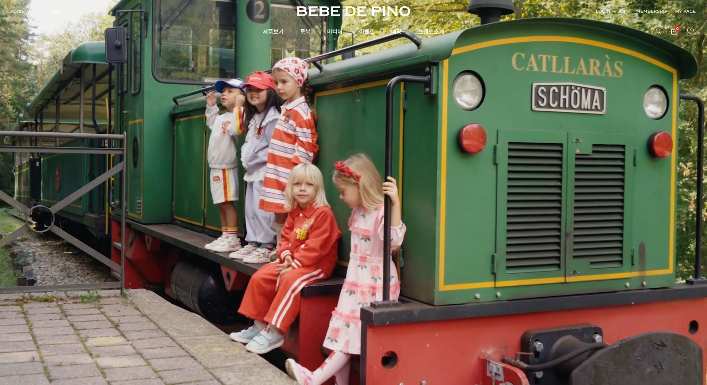
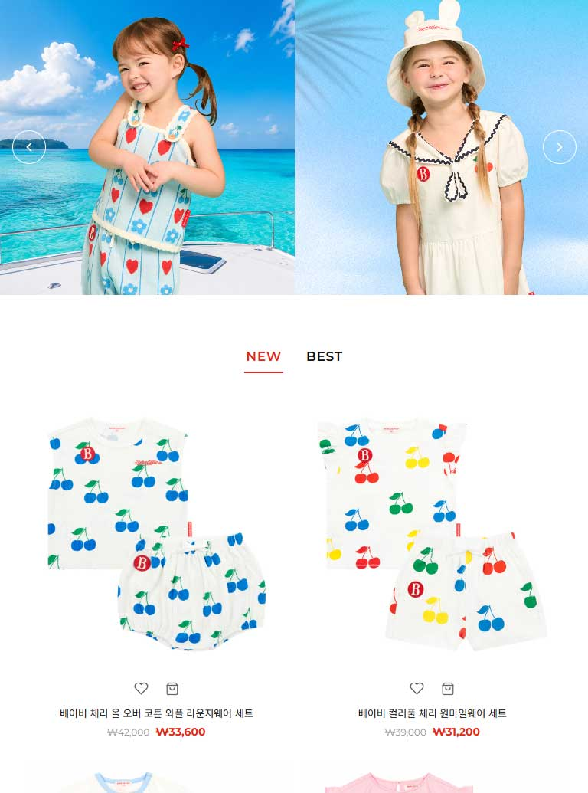
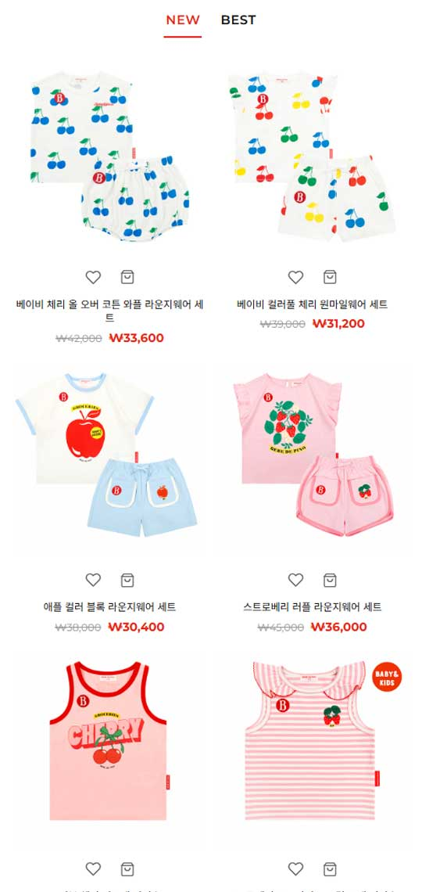

FEATURE 01
투명 → 화이트 전환 내비게이션
최상단에서는 투명 배경 위에 흰색 텍스트가 영상과 겹쳐 보이다가, 스크롤을 10px만 내려도 배경이 흰색으로 전환되며 텍스트 색상도 함께 바뀝니다. hover 시에도 동일하게 전환되어, 영상 위에서도 가독성을 잃지 않습니다.

RENEWAL POINT
이 프로젝트는 새 브랜드를 만드는 대신, 실존 유아동복 브랜드의 사이트를 커머스형 랜딩으로 재구성한 리뉴얼입니다. 정적인 브랜드 소개에 그치지 않고, 실제 커머스 사이트에 필요한 상품 탐색·좋아요·장바구니 담기·SNS 유입까지 이어지는 사용자 흐름을 프론트엔드 단에서 구현하는 것을 목표로 했습니다.
RENEWAL GOAL
"브랜드를 소개하는 페이지"에서 "상품을 탐색하게 만드는 페이지"로. 영상 히어로로 시선을 끈 뒤 컬렉션 → 신상/베스트 상품 → SNS로 이어지는, 실제 커머스 사이트의 랜딩 구조를 그대로 재현했습니다.
BRAND TONE 유지
화이트 베이스 위에 레드 포인트를 쓰는 클린한 유아동복 브랜드 룩을 유지했습니다. 리뉴얼은 브랜드를 바꾸는 것이 아니라, 브랜드가 가진 톤을 커머스 문법 안에서 더 잘 작동하게 만드는 일이라고 판단했습니다.
INTERACTION 밀도
컬렉션 무한 루프 슬라이더, NEW/BEST 탭 전환, 상품 카드 hover 크로스페이드, 좋아요·장바구니 뱃지 갱신 — 정적 페이지와 커머스 랜딩의 차이는 이런 마이크로 인터랙션의 밀도에서 나온다고 보고 집중적으로 구현했습니다.
CODE STRUCTURE
기능 단위를 IIFE 모듈로 분리해 전역 스코프 오염을 막고, passive 이벤트 리스너와 리사이즈 디바운스로 성능을 챙겼습니다. 화면만 만드는 퍼블리싱이 아니라 유지보수 가능한 구조를 목표로 했습니다.
DESIGN TOKENS
COLOR
※ 브랜드 레드는 현재 --red(#C8302A) 변수와 하드코딩 #E72819가 혼용되어 있어, 아래 개선 계획대로 변수 하나로 통일할 예정입니다.
TYPE
MONTSERRAT
NEW ARRIVALS — BEBE DE PINO
영문 로고 · 메뉴 · 가격 · 라벨
NOTO SANS KR
아이의 매일을 위한 옷
한글 메뉴 · 상품명 · 본문
OVERVIEW
페이지는 Header(유틸바 + 메인 메뉴) → Hero(풀스크린 배경 영상) → Collection(5장 무한 루프 슬라이더) → NEW/BEST 상품(탭 전환형 8개 그리드) → 마퀴(브랜드 슬로건 무한 스크롤) → SNS/Instagram(가로 스크롤 카드) → Footer(사업자 정보 + TOP 버튼) 순으로 흐릅니다. 히어로 영상은 autoplay·muted·loop·playsinline 조합으로 모바일 자동재생 제약까지 정확히 대응했고, 푸터에는 전자상거래법상 통신판매업자 표시 의무를 반영한 사업자 정보를 갖췄습니다.

KEY FEATURES
FEATURE 01
최상단에서는 투명 배경 위에 흰색 텍스트가 영상과 겹쳐 보이다가, 스크롤을 10px만 내려도 배경이 흰색으로 전환되며 텍스트 색상도 함께 바뀝니다. hover 시에도 동일하게 전환되어, 영상 위에서도 가독성을 잃지 않습니다.
FEATURE 02
컬렉션 5장을 3장씩 보여주는 슬라이더로, DOM 순서를 실제로 앞뒤로 옮기며 이음새 없는 무한 루프를 구현했습니다. 2.5초 자동 재생, 화살표, 터치 스와이프를 모두 지원하고 마우스를 올리면 자동 재생이 멈춥니다.

FEATURE 03
탭 클릭 시 상품 그리드 8개가 데이터 기반으로 재렌더링되며 페이드 애니메이션이 적용됩니다. 카드 hover 시 기본 이미지가 상세컷으로 크로스페이드되고, 좋아요·장바구니 클릭은 이벤트 위임으로 처리되어 상단 nav의 장바구니 뱃지 숫자가 즉시 올라갑니다.

FEATURE 04
브랜드 슬로건 이미지를 두 벌 이어 붙여 이음새 없이 반복되는 마퀴로 메시지를 각인시키고, 인스타그램 카드는 카드 단위 가로 스크롤 캐러셀로 배치했습니다. 실제 게시물 링크로 새 탭 이동이 연결되고, 스크롤 끝에서는 화살표가 자동으로 비활성화됩니다.

RESPONSIVE



NEXT STEPS
완성한 프로젝트를 스스로 코드 리뷰하며 정리한 목록입니다. 우선순위와 이유를 분명히 해두면 다음 작업에서 바로 착수할 수 있습니다.
발견
모바일(768px 이하)에서 nav 메뉴 전체가 사라지고 햄버거 아이콘만 남는데, 클릭하면 콘솔 로그만 출력될 뿐 실제 메뉴가 열리지 않습니다.
왜 중요한가
모바일 사용자가 메뉴 자체에 접근할 수 없는 상태라, 이 프로젝트에서 우선순위가 가장 높은 항목입니다.
다음 계획
오른쪽에서 슬라이드인되는 오프캔버스 드로어 메뉴를 구현하고, aria-expanded로 열림 상태를 전달합니다.
발견
브랜드 레드가 CSS 변수 --red(#C8302A)와 하드코딩된 #E72819 두 가지로 혼용되고 있습니다. SNS 이미지 경로도 images/sns_1.jpg와 images/sns/sns_4.jpg로 폴더 구조가 달라 일부가 깨질 수 있습니다.
왜 중요한가
브랜드 아이덴티티 컬러가 두 값으로 갈리면 유지보수에서 반드시 어긋나고, 경로 불일치는 실서비스에서 이미지 깨짐으로 이어집니다.
다음 계획
레드 컬러를 --red 변수 하나로 통일하고, SNS 이미지 폴더 구조를 한 가지로 정리합니다.
발견
장바구니 아이콘을 누르면 뱃지 숫자만 올라가고 담긴 상품 목록은 저장되지 않아, 새로고침하면 0으로 초기화됩니다.
왜 중요한가
커머스형 랜딩의 핵심 인터랙션이 실제로는 휘발성이라는 뜻이라, 완성도를 좌우하는 지점입니다.
다음 계획
장바구니 담기 시 상품 정보를 localStorage에 저장하고, '장바구니에 담겼습니다' 토스트 알림으로 명확한 피드백을 추가합니다.